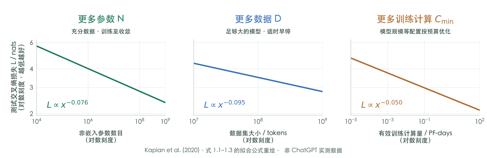
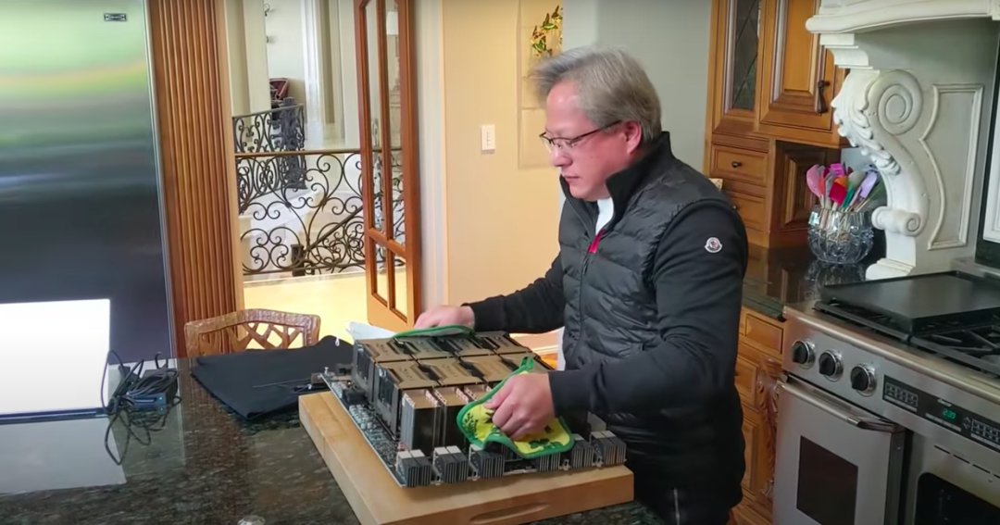
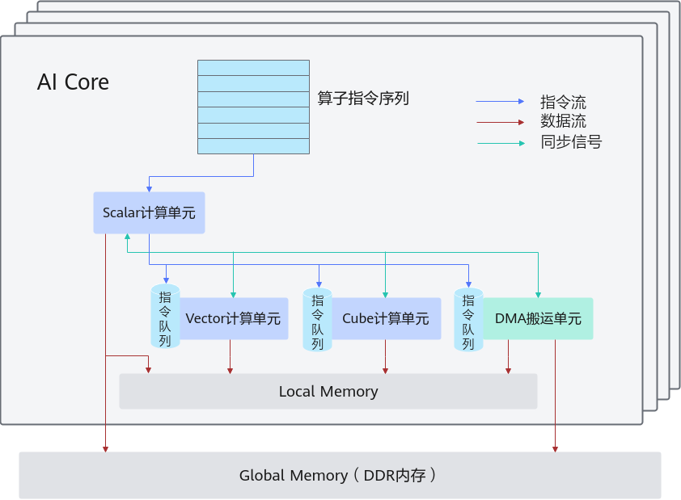
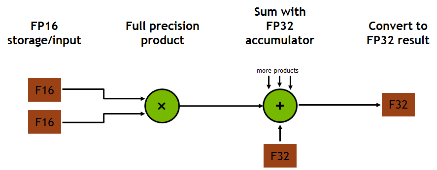
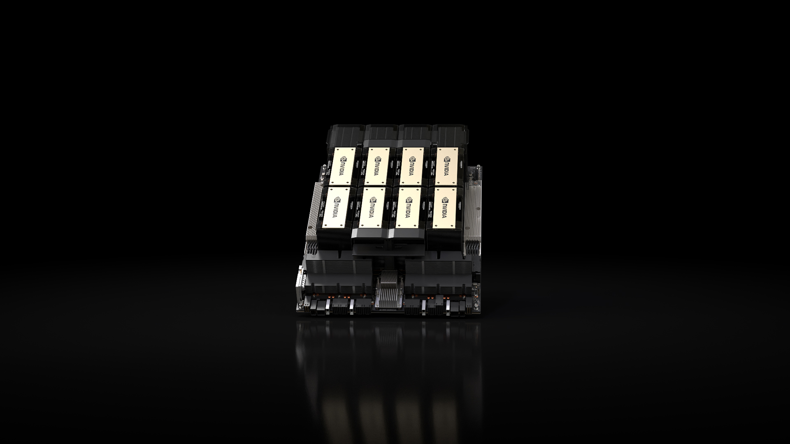

AI 时代的并行计算：基础与性能模型
从大模型与计算平台出发，经显存预算和混合精度进入GEMM；用分组活动理解依赖与通信，连续推导阿姆达尔定律、计算强度与屋顶线模型，再通过循环重排、分块与已有测量回到大模型的复用与流水线。
学完这一讲，你能
- 从大模型的张量计算出发，解释 GPU 并行与流水线分别加速了什么
- 估算张量的存储空间，解释浮点舍入以及输入精度与累加精度的区别
- 用工作量、依赖链与阿姆达尔定律，分析并行加速的上限
- 计算加法与矩阵乘法的 FLOPs、数据流量和计算强度，用屋顶线模型判断瓶颈
- 说明分块、复用、融合与流水线改变了什么成本，区分理论上界和实测结论
大模型与计算平台
从大模型的一次回答出发
让大模型总结长文、解释代码或分析复杂问题，我们往往很快就能开始阅读回答，而且文字还在不断出现。模型把文本分成词元（token），一个词元不一定是一个完整单词。图形处理器（GPU，Graphics Processing Unit）负责加速其中的大量计算。接下来观察两种机制。
- 1提交问题
- 2处理上下文
- 3流式生成
- 4回答完成
用一句话解释，GPU 为什么适合许多 AI 计算？
等待开始
我们把问题交给模型。
教学流程示意，按短语揭示文字；不对应真实 token 边界，也不表示真实推理速度。
GPU 能把大量相似的计算分配给许多执行单元，并行推进。 生成过程：处理输入上下文，再根据已有上下文逐步生成并显示文字；用户可以边读，模型边计算后续内容，直至结束。
一方面，把推理算快：GPU 并行计算。 每一步生成内部，都有大量矩阵、向量运算可以并行执行。GPU 的并行算力与高带宽存储，配合高效的算子实现（如矩阵乘法这样的基本计算操作），是大模型能够快速响应的重要支撑。
另一方面，让用户更早读到结果：流式输出。 已生成的文字先显示，模型继续计算后文。于是，用户阅读前文与模型生成后文可以在时间上重叠，一部分计算等待被“藏”进了阅读过程。
这为理解流水线提供了一个直观类比。 后面学习通用矩阵乘法（GEMM，General Matrix Multiplication）时，我们会看到：计算当前数据块的同时，提前搬运下一块数据，用计算覆盖一部分访存等待。二者重叠的活动不同，共同思想是让不同阶段接续、重叠，减少暴露出来的等待。
Q01 · 讨论
后一个词元（token）依赖前文，GPU 的并行发生在哪里？流式输出隐藏了什么等待，又保留了什么依赖？
Q01
并行发生在单步内部，也可以发生在不同请求之间。 常见自回归生成中，后一个 token 依赖已有上下文；但每一步的矩阵、向量运算仍有大量可分工的工作，不同请求也可以合批执行。
流式输出让用户阅读与后续推理重叠。 用户无需等完整回答算完才开始读；但生成后文的依赖仍然存在，模型所需的计算量也不会仅因流式显示而减少。若生成速度跟不上阅读速度，用户仍会等待。首次看到文字前，还可能经历排队、网络传输与输入上下文处理。
几行 PyTorch 背后：张量计算中的并行与流水线
从上一页的回答体验，走到程序中的 model(x)。张量（tensor）是按多维数组组织的数据；一批图片或一段文本的特征都可以表示成张量。下面用一个分类模型对照训练与推理：训练增加了反向传播和参数更新，它们也由张量运算完成。
中央处理器（CPU，Central Processing Unit）负责主机程序与数据准备。CUDA 的全称是 Compute Unified Device Architecture（统一计算设备架构），是 NVIDIA 的 GPU 并行计算平台；PyTorch 中的 "cuda" 表示使用 NVIDIA GPU。
从熟悉的训练与推理流程，看背后的两类工作：
| 流程中的一步 | 背后发生什么 |
|---|---|
| DataLoader 准备下一批输入 | CPU 读取、变换数据，并可预取后续批次 |
| 模型前向计算 | 矩阵乘法、逐元素运算等张量计算 |
| 反向传播与参数更新 | 计算梯度，再用张量运算更新参数 |
| 推理 | 使用已有参数执行前向计算 |
先沿这张流程表理解计算与数据准备的分工。
前向传播计算预测，反向传播计算损失对参数的梯度，优化器据此更新参数。batch_size=64 表示每批处理 64 个样本；数据加载器（DataLoader）的 4 个工作进程各预取 2 个后续批次。pin_memory 使用锁页主存，便于向 GPU 传输。
- 并行在算子里面： 线性层（加权求和）、归约（把多个数合并，如求和）与逐元素更新，都包含大量可分工的张量计算。
- 流水线在批次之间： GPU 处理当前批次时，CPU 的数据加载工作进程 可以读取和变换后续数据。
这里的预取发生在 CPU 数据准备端；CPU→GPU 搬运与 GPU 计算能否进一步重叠，还取决于缓冲、执行队列与依赖安排，后面再用时间线分析。
从 PyTorch 到 GPU：一行算子怎样落到硬件上
核函数（kernel）是提交给 GPU 执行的程序；线程是执行这段程序的一条工作路径，多个线程可以负责不同数据。
沿着 model(x) 往下看：模型表达 → 算子实现 → CUDA 提交 → GPU 执行。
model(x) 表达模型；训练时自动求导组织梯度计算
选择已有计算库，或通过编译生成与融合核函数（kernel）
把 kernel 及其参数提交给 GPU
具体线程组织与存储层次，在后续执行模型中展开
CPU 数据准备与预取 → 主存 → CPU→GPU 拷贝 → 显存中的张量
展开：默认执行与编译执行的具体路径
ATen 即 A Tensor Library；按设备、布局及自动求导（Autograd）状态选择实现
cuBLAS：CUDA 上的基础线性代数子程序库（BLAS，Basic Linear Algebra Subprograms），例如矩阵乘
cuDNN：CUDA Deep Neural Network library，CUDA 深度神经网络库，例如卷积
Dynamo 捕获算子图 → AOTAutograd 整理求导图 → Inductor 优化并生成代码
AOT 指 Ahead-of-Time（提前），这里指提前捕获求导图
例如用 GPU 编程工具 Triton 生成融合核函数；也可复用库实现
CUDA 运行时与驱动接口负责提交。线程先组成线程块，分给 GPU 内部的计算单元执行；具体层次在下一讲逐步展开。
两条路径是概念对照；一次调用不必经过图中所有工具。算子描述“做什么”，核函数安排“怎样在设备上做”。 例如矩阵乘法是数学操作，kernel 要安排线程、读取输入并写出结果。
一行 Python、一个算子与一个 kernel 并不一一对应：一个算子可能启动多个 kernel，编译优化也可能把多个算子融合执行。
图中聚焦 NVIDIA GPU；其他加速器保留类似的模型表达，下面的库、编译工具和设备程序可以不同。
来源与延伸阅读
GPU 的出发点：让大量相似工作一起推进
为什么最初为图形设计的处理器，会成为 AI 的计算平台？先把一帧游戏画面拆成工作。
图中展示现代光线追踪效果；下面用简化的光栅化流程说明 GPU 的图形起源。
| 从场景到画面 | 需要完成的工作 | 并行性在哪里 |
|---|---|---|
| 顶点与三角形 | 将人物、建筑的几何坐标变换到屏幕空间 | 大量顶点执行相似的坐标变换 |
| 光栅化与片元着色（计算像素候选的颜色） | 确定三角形覆盖的采样位置，计算纹理、材质与光照 | 大量片元执行相似的着色程序 |
| 深度测试与合成 | 处理遮挡，将结果写入画面 | 按位置组织大量工作，同时保留必要的顺序与依赖 |
假设输出 3840 × 2160、每秒 60 帧，每秒对应约 4.98 亿个输出像素位置；每个位置背后还可能涉及多次采样、着色与访存。这是输出规模的算术示例，不是该游戏的实测性能或真实着色次数。
从“许多顶点、片元运行相似程序”，到“许多张量元素执行相似运算”：工作对象变了，大量数据上的并行计算需求相通。这推动 GPU 强调吞吐量（单位时间完成的工作量），也为后来 CUDA 将其用于通用计算提供了基础。
图形流水线仍有阶段依赖；能够并行的是其中的大批相似工作。下一步的突破，是让更多程序员也能使用这种能力。
来源与延伸阅读
图源：NVIDIA《黑神话：悟空》官方技术介绍，游戏：游戏科学。图中展示现代光线追踪效果；下面用简化的光栅化流程说明 GPU 的图形起源。
架构背景：CUDA Programming Guide。
黄仁勋的远见：在 AI 热潮之前，为通用计算铺路
1993：从图形起步 → 2006：公布 CUDA 架构 → 2012：AlexNet 的突破
上一页的 GPU 已经能处理海量图形工作。黄仁勋和团队进一步追问：这种计算能力，能不能交到科学家和更多程序员手里？
一个早期信号：医院里的显卡。 黄仁勋在 2024 年斯坦福访谈中回忆，麻省总医院的医生用 Cg 图形编程工具做计算机断层成像（CT，Computed Tomography）重建，他专程去了解；计算化学研究者也开始用这类工具表达算法。这些具体应用，让他逐步相信 GPU 可以走出图形领域。
一次艰难选择：在市场尚不清晰时继续建设。 他回顾，公司曾经历约十年的持续投入，而许多未来市场还未形成，支撑业务的主要市场仍是图形。继续推进，需要带着工程师、管理团队、股东和合作伙伴共同承担不确定性。CUDA 把这种判断落实成可供开发者使用的通用编程平台。
一种坚持的方法：寻找“未来成功的早期信号”。 他在访谈中强调，研究者是否解决了新问题、是否出现新的研究成果，可以帮助团队判断方向。信念需要这些证据不断支撑，也需要在条件变化时重新检查。
这份前瞻性，是提前建设可复用的平台；这份勇气，是在回报尚不明确时持续投入，并用真实应用检验方向。到了 2012 年，AlexNet 让这些积累与深度学习的需求相遇。
来源与延伸阅读
故事依据：黄仁勋在 Stanford GSB 的访谈，属于当事人的回顾；时间节点对照 NVIDIA 公司历史。末段为课程解读。
AlexNet：从一张图片，到 1000 类识别结果
它做的是图像分类。 输入一张红、绿、蓝三通道（RGB，Red / Green / Blue）图片，模型为 ImageNet 大规模视觉识别挑战（ILSVRC，ImageNet Large Scale Visual Recognition Challenge）的 1000 个类别输出分数与概率，例如判断图片属于虎斑猫、帆船等哪一类。训练使用约 120 万张带标签图片。
图像首先表示成数值张量。网络接收像素值，再用训练得到的权重计算类别分数。
训练时把多张图组成一批（batch），为后续算子提供更多可并行的数据。
展开：两张 3 GB GPU 怎样连接？
交叉线表示跨卡读取。图示选取 Conv2→Conv4；两卡协作运行一个网络，通信只出现在选定的层间连接。
结构符号不按比例，也不是实际特征图或全部神经元。逐层高亮表示讲解顺序；训练时还要沿依赖反向计算梯度。
任务：RGB 图片的 1000 类分类。Conv2 两卡各 128 通道；Conv3 各 192 通道并读取两卡输入；Conv4 各 192 通道、只读取同卡输入。
2012 年，Krizhevsky、Sutskever 与 Hinton 的团队用 两张 GTX 580，每张 3 GB 显存，训练这个约 6000 万参数的网络，耗时约 5–6 天。为了容纳并训练网络，作者将部分层按通道或神经元分到两卡，只在需要的地方交换结果。两卡分工同时面对容量与通信。
还有与第二页呼应的流水线。 原论文第 4.1 节写道：CPU 用 Python 准备增强后的图像，同时 GPU 训练前一批图像。数据准备与模型计算的重叠，在这个早期案例里已经出现。
模型、算子与硬件共同决定能做多大的实验。 这个发生在多伦多的突破，也让 CUDA 平台与深度学习需求相遇。
图示按 2012 年论文的主干整理，逐层高亮用于讲解，不运行真实模型。
来源与延伸阅读
来源：AlexNet 原论文，第 2、3.2、3.5、4.1 节及图 2。图示按 2012 年论文的主干整理，逐层高亮用于讲解，不运行真实模型。
Q02 · 讨论
两张各 3 GB 的显卡，为什么不等于一张可任意访问的 6 GB 显卡？
Q02
两份显存属于两台设备。 程序要划分数据与计算，跨卡使用结果还要经过互连与通信。容量可以相加，访问代价却没有因此变成单卡；AlexNet 为此选择了有约束的跨卡连接。
ChatGPT 横空出世：规模增长，为什么能带来进步
2012：识别图片 → 2022 年 11 月 30 日：直接与模型对话。 ChatGPT 的研究预览让用户能够解释概念、协助改代码并连续追问。它在 GPT-3.5 系列模型上经过对话微调与人类反馈强化学习（RLHF，Reinforcement Learning from Human Feedback）；对话体验建立在预训练、后续训练与产品设计的共同积累上。GPT 指生成式预训练 Transformer（Generative Pre-trained Transformer）。
支撑规模化投入的一条线索，是 尺度定律（scaling laws）：

图按 Kaplan 等（2020）的尺度定律重绘拟合，无实验散点。横轴依次为参数、数据和有效训练计算预算；纵轴为预测损失，越低越好。三图使用双对数坐标，研究条件各有不同。
| 从曲线读出什么 | 对计算的含义 |
|---|---|
| 在研究范围内，规模增加伴随损失有规律地下降 | 更多有效计算，让更大规模的模型实验成为可能 |
| 右图中，计算预算增至10倍，拟合损失约下降11% | 收益不会与资源投入等比例增长 |
| 模型与数据需要配合 | 更大的模型还需要足够的数据与训练；Chinchilla 的研究进一步讨论了这种配比 |
预测损失衡量模型对后续文本的预测，不能直接换成任务准确率。图中计算预算单位与幂律参数见原论文；具体能力仍需单独评测。
对本课程最直接的启发：把有限时间和资源，转化为更多有效计算。 为此，需要从编程工具继续走向完整的硬件系统。
从厨房发布会，看一块芯片之外的系统
更大的计算规模，最后必须由真实的机器承载。回看 2020 年，黄仁勋在家中厨房录制 GTC 主题演讲，拿出了画面中的计算硬件。

顺着这块硬件往外看，GPU 需要几种配合：
| 配合 | 要解决的问题 |
|---|---|
| 显存与互连 | 数据怎样送到计算单元，多块设备怎样交换结果？ |
| 供电与散热 | 持续运行时，怎样提供电力并带走热量？ |
| 软件与系统 | 模型中的算子怎样调用这些设备？ |
一颗能计算的芯片，要与数据供给、软件和工程系统一起工作。 这也解释了为什么下一页的另一种 AI 芯片，要与软件栈一起登场。
图中为整块计算硬件，不是单个裸芯片。
来源与延伸阅读
来源：NVIDIA · GTC 2020 主题演讲。图中为整块计算硬件，不是单个裸芯片。
昇腾故事：为什么芯片与软件栈一起登场
2018 年 10 月，华为在上海发布 AI 战略与昇腾系列，并同时介绍 CANN、MindSpore（深度学习框架）和应用服务。2019 年，昇腾 910 成为其训练计算产品的一部分。
CANN 全称 Compute Architecture for Neural Networks（面向神经网络的计算架构），是昇腾的异构计算软件平台，包含算子库、编译与执行支持。
从 CUDA 到 CANN，平台路线不同，却都需要回答同一个问题：一个数学算子，如何被可靠、高效地落实到不同硬件上。
Q03 · 讨论
同一段 Python 模型代码能在两种加速器上运行，能否据此认为底层程序和性能相同？
Q03
数学接口相同，执行方式可以不同。 相同 Python 表达式下面，可能选择不同算子库、编译结果、精度与数据布局。比较两种平台，要同时看算子能否支持、结果是否满足要求，以及真实工作负载的用时。
从昇腾人工智能计算核心（AI Core）看计算与搬运的分工
软件最后要调动硬件。先沿这张图辨认三种工作：控制、计算、搬运。

| 图中的名称 | 职责 |
|---|---|
| 标量单元（Scalar） | 处理单个数与控制指令 |
| 向量单元（Vector）/ 矩阵单元（Cube） | 分别处理一组数与矩阵乘加 |
| 直接存储器访问（DMA，Direct Memory Access） | 专用搬运引擎，在存储区域之间传输数据 |
| 局部存储（Local Memory）/ 全局存储（Global Memory） | 前者靠近计算单元，后者保存较大规模的设备数据 |
计算单元再快，也需要及时拿到数据。 后面分析 GEMM 时，我们会把“做多少次运算”和“搬多少字节”分开计数。
这是编程架构抽象；具体缓冲区、指令与同步机制在后续课程展开。
来源与延伸阅读
图源：昇腾 CANN 7.0 官方文档，图1。这是编程架构抽象；具体缓冲区、指令与同步机制在后续课程展开。
从马斯克到 Claude：GPU 集群成为可交易的资源
2026 年 5 月 6 日，Anthropic 宣布与马斯克旗下的 SpaceX 达成算力合作，使用 Colossus 1 数据中心的全部计算容量。 公告称，这项安排将在当月为它提供超过 22 万张 NVIDIA GPU、超过 300 兆瓦（MW，1 MW = 100 万瓦） 的新增容量，用于扩展 Claude 服务。
这个故事的反差在于：开发模型的公司，也可以向另一家模型公司的算力平台购买服务。 SpaceXAI 提供 Colossus，Anthropic 用它服务 Claude；NVIDIA GPU 则成为不同模型背后共同使用的计算基础。
张量处理器（TPU，Tensor Processing Unit）也在同一场算力竞争中。 这是 Google 面向 AI 张量计算设计的专用加速器。2025 年 10 月 23 日，Anthropic 宣布扩大 Google Cloud 合作，计划使用多达 100 万个 TPU，扩展规模为数百亿美元。采购对象是云计算能力与服务，TPU 是支撑这些服务的专用 AI 加速器。
从本课程看，这些案例说明：模型能力背后，是可以采购的GPU、TPU和云算力服务。 MW 在这里描述电力容量口径，不能直接换算成模型性能；以上规模按各自公告日期记录。
星际之门：围绕并行算力，组织 5000 亿美元投资计划
租用已有集群之外，另一条路径是建设下一批算力。 2025 年 1 月 21 日，OpenAI 与 SoftBank 宣布 星际之门（Stargate），提出未来四年在美国投资 5000 亿美元建设 AI 基础设施的计划，并宣布立即启动部署首期 1000 亿美元。这里是项目投资计划口径。
| 谁在其中 | 围绕算力承担的角色 |
|---|---|
| SoftBank、OpenAI、Oracle、MGX | 公告列出的初始股权出资方；SoftBank 负责财务，OpenAI 负责运营 |
| NVIDIA、Oracle 等技术伙伴 | 提供芯片、系统与云基础设施，把投资转成可运行的 GPU 集群 |
| OpenAI | 用新增计算能力训练模型、运行推理，承接 AI 产品需求 |
从发布会走到实际计算。 OpenAI 在 2025 年 7 月披露：得州 Abilene 站点已有部分设施运行，Oracle 已开始交付 NVIDIA GB200 机架，并已执行早期训练与推理任务。
从购买现成算力，到投资建设未来算力，资本围绕同一类计算需求组织起来。 资金需要经过建设、交付和实际使用，才能转化为服务能力；维持这些机器运行，还要持续供电。
视频：小Lin说 · AI 巨头资本混战
一座 GPU 集群，一年会用多少电？
Colossus 1 的合作公告给出了超过 300 MW 的容量量级。以此为参照，先设一个可计算的情景：假设整个设施全年平均用电功率为 300 MW，连续运行 365 天。
一年约 26.28 亿度电，也就是 2.628 太瓦时（TWh，1 TWh = 10 亿 kWh）。 1 度电 = 1 kWh。把这个数放到两个熟悉的尺度上：
| 用什么比较 | 26.28 亿度电相当于 | 比较基准 |
|---|---|---|
| 居民生活 | 约 230 万人一年的生活用电 | 用中国 2025 年居民生活用电与年末人口粗算，人均约 1130 度/年 |
| 三峡电站 | 2025 年全年发电量的约 2.75% | 三峡电站 2025 年发电量为 957.15 亿度 |
居民比较只含生活用电，不含工商业用电。
以上是按平均设施功率300 MW推算的情景，不是集群实测年度用电。 300 MW若仅指计算设备，还需另计制冷等用电；三峡比较只表示年度电量的比例。
当 AI 算力扩展到这样的规模，电力就成为计算基础设施的一部分。 下一页从这个量级出发，看 AI 的能源需求。
来源与延伸阅读
比较来源：国家能源局的2025年居民生活用电量与 国家统计局的年末人口；居民比较不含工商业用电。三峡数据来自 长江电力 2025 年发电量公告（原文，新浪存档）。
视频：小Lin说 · AI 能源之战
用 GEMM，把前面的问题落到同一项计算上
从模型能力到集群与能源，最后都要落到一项项实际计算。我们选 通用矩阵乘法（GEMM） 贯穿本讲：用同一个操作，研究并行、数据搬运、精度与资源代价。
我们先研究它最简单的形式：
- 并行与速度：把矩阵乘加分给许多线程，协作完成同一个结果。
- 存储与搬运：矩阵需要放得下，计算时还要及时取得数据、尽量复用。
- 精度与代价：不同数值格式影响误差、存储量与执行效率；完成同一任务的时间和能耗也随实现而变。
先看数据怎样存、精度怎样选，再建立一份朴素的 C++ 矩阵乘法，逐步看懂 GPU 如何把它算快、算准。
数据与显存预算
从装机视频认识：一台计算机由什么组成
把视频里的实物与职责对应起来：
| 部件 | 在计算中承担什么 |
|---|---|
| CPU 与独立显卡上的 GPU | 执行主机程序与设备上的并行计算 |
| 内存条与显卡上的显存 | 分别存放主机和设备正在使用的数据 |
| 固态硬盘（SSD，Solid-State Drive）与主板互连 | 持久保存文件，连接计算与存储部件 |
| 电源与散热器 | 提供电能，带走运行产生的热量 |
这里的独立显卡有自己的显存，区别于 CPU 使用的主存。高带宽内存（HBM，High Bandwidth Memory）是高端 AI 芯片常用的一种显存实现：通过堆叠存储芯片与宽接口提供高数据传输能力；并非所有 GPU 都采用 HBM。 接下来追踪：SSD 上的模型文件，怎样变成 GPU 正在使用的操作数？
一个模型文件，怎样进入计算过程
SSD 长期保存文件，主存与显存保存运行中的数据，CPU 提交工作，GPU 执行并行计算。
按依赖分步说明，省略缓存细节；箭头速度不表示真实带宽。CPU 可以异步提交，实际阶段也可能重叠。
SSD → 主存 → 显存；CPU 提交 kernel；GPU 从显存准备操作数、并行计算，再将结果写入显存。仅在 CPU 需要时回传主存。
跟着一次矩阵乘法，区分两条路径：数据从哪里来，计算命令由谁提交。动画可逐步推进，也可连续播放。
图示采用离散 GPU（与 CPU 分立的设备）+ 独立显存，展示显式拷贝的一种常见路径。CPU 执行主机程序并提交任务，GPU 执行 kernel（设备上的并行程序）；GPU 算完后，数据可以继续留在显存，交给下一个算子。
搬到显存还不等于已经送入计算单元。 GPU 还要执行读取（load）准备操作数；写回称为 store。例如 r2 保存地址 0x1000，示意指令 load r0 ← [r2] 将该地址处的值读入寄存器 r0，再用于后续乘法。寄存器保存当前操作数与部分结果，缓存可保留近期访问数据的副本。
统一内存及直接存储访问等路径可以有不同的数据组织。
来源与延伸阅读
参考：CUDA 编程模型。统一内存及直接存储访问等路径可以有不同的数据组织。
从比特到搬运时间：计算术语的交互复习
bit（位）取 0 或 1；本课平台的 byte（字节，B）由 8 bit 组成，共有 2⁸ = 256 种位模式。二、十、十六进制是同一个整数的不同写法。
负数怎样表示？补码是一种表示有符号整数的编码。以 8 位为例，把最高位的权重从 128 改成 −128，其余位不变。切换规则时，下面的比特保持不变。
按 uint8 解读：8 + 4 + 1 = 13
例如，全 1 按 uint8 是 128 + 127 = 255；按 int8 补码是 −128 + 127 = −1。按 int8 解读时，最高位单独为 1 表示 −128。
用 −5 看懂“取反加一”，以及这样编码的好处
- ① 先写出 +5
0000 0101 - ② 每一位取反（0↔1）
1111 1010 - ③ 再加 1，得到 −5 的补码
1111 1011
8 位全 1 的无符号值是 255，因此取反得到 255−5，再加 1 就是 256−5 = 251。按补码解读，251−256 = −5。
0000 0101 (+5)
+ 1111 1011 (−5)
───────────
1 0000 0000+5 与 −5 相加，保留低 8 位就得到 0；最左边的 1 是超出 8 位的进位。这样，减去 5 可以交给同一套二进制加法电路处理。
补码是这里的整数解释规则；float32 使用符号、指数和有效数字，下一页签会比较它们。
先把数值写成二进制科学计数法
整数位的权重是 1、2、4、8……；小数点右侧依次是 1/2、1/4、1/8……。
核对有效数字：1.1012 = 1 + 1/2 + 1/8 = 1.625，因此 +1.625 × 8 = 13。
三种写法表示同一个数。接下来，float32 把符号、指数、小数部分分别存进 32 位。
以上三个示例都能被 float32 精确表示，且是规格化数。0.1 的舍入、零、非规格化数和 NaN 另有细节，先掌握这条解码路线。
容量，回答这些数据占多少空间
连续数组的数据量 = 元素个数 × 每元素字节数。改动下面矩阵的边长或类型，观察存储预算如何变化。
1024 × 1024 × 4 B = 4,194,304 B
- MB / GB
- 1 MB = 10⁶ B
1 GB = 10⁹ B - MiB / GiB
- 1 MiB = 2²⁰ B
1 GiB = 2³⁰ B
上面两种单位描述的是同一份数据。这里只计算矩阵的数据部分；元信息、对齐与其他工作缓冲区另计。
带宽看持续速率，延迟看等待时间
带宽是单位时间能够传输的数据量，常用 GB/s；延迟是从发起到完成所需的等待时间。下面用“固定启动开销 + 数据传输”近似一次搬运。
总时间 ≈ 固定启动开销 + 数据字节数 ÷ 持续带宽
固定启动开销在本例占总时间的 0.24%。增大传输量会摊薄它的占比；只提高带宽，则无法消除这段固定等待。
GB/s 与 Gb/s 差 8 倍：8 Gb/s = 1 GB/s。参数仅用于教学估算，未计排队、协议和并发干扰，不代表某款设备实测。
位与字节：本课平台 1 B = 8 bit。00001101₂ = 13₁₀ = 0x0D；补码用固定的位数表示有符号整数；8 位补码把最高位权重改为 −128，其余位不变，范围是 −128～127。11111111₂ 按 uint8 是 128+127=255，按 int8 补码是 −128+127=−1。−5 的编码：00000101 → 逐位取反 11111010 → 加一 11111011。
数据类型：13 = 1101₂ = 1.101₂ × 2³。float32 分成符号 1 位、指数 8 位、小数字段 23 位：s=0，E=3+127=130（10000010），F=101 后补 0，合起来是 0x41500000。解码时 1.101₂=1+1/2+1/8=1.625，数值为 +1.625×2³=13。同样的位按 uint32 或 int32 是 1095761920。float 13.0 转成 int32 的数值仍为 13（0x0000000D）；位重解释保留 0x41500000，按 int32 读为 1095761920。float32 的 1.0 则是 s=0、E=127、f=0，因此 +1×2⁰=1。
容量：1024 × 1024 个 float32 占 4,194,304 B = 4 MiB = 4.194304 MB。GB = 10⁹ B，GiB = 2³⁰ B。
带宽与延迟：启动开销 20 μs，传输 64 MiB，带宽 8 GB/s：总时间 ≈ 0.02 + 8.388608 = 8.408608 ms。仅为教学估算。8 Gb/s = 1 GB/s。
位模式 → 类型解释 → 数据量 → 搬运时间：这四步把“一个数”连接到“一个算子的存储与性能预算”。本课示例平台采用 每字节 8 位（bit），float 采用 IEEE 754 浮点标准中的 32 位二进制格式（binary32，即 FP32；FP 表示 Floating Point，浮点）。
来源与延伸阅读
显存不足（out of memory）：模型放得下，训练仍可能爆显存
模型成功搬到了 GPU，前向传播也跑完了，到了 loss.backward() 却停住了——一次训练中的报错场景（节选示意）：
File "train.py", line 42, in train_step
loss.backward()
torch.cuda.OutOfMemoryError: CUDA out of memory.
Tried to allocate 512.00 MiB.
模型各层产生的中间结果称为激活。显存不足常缩写为 OOM（Out of Memory）。这里的 512 MiB 是这一次额外申请的空间。模型参数、保存的激活和已经生成的梯度等，此时可能已占用了大部分显存。OOM 也可能出现在前向传播或优化器更新阶段，关键是运行中的显存峰值。
回到一个容量预算：设备有 16 GiB 可用显存，模型有 个参数，每个参数占 2 B。
先只计算权重：
权重只是显存账本中的一项。 推理需要运行中的中间数据与临时空间，训练还要保存反向传播所需的激活、梯度和优化器状态。
一个直接的想法是：让每个数少占一些字节。 接下来就从这笔存储收益出发，看低精度会怎样改变可表示的数和计算结果。
来源与延伸阅读
Q04 · 讨论
“权重约 13.04 GiB，小于 16 GiB，因此推理一定能运行”——这条推理缺少哪些条件？若改为训练，还会新增什么？
Q04
剩余约 2.96 GiB，但还要容纳激活、推理过程中保留的状态、临时工作区、运行时占用和内存管理开销；它们受架构、上下文长度、批量与实现影响。训练通常还需要梯度、保存的激活与优化器状态，具体精度方案还可能有高精度权重副本。权重能放下是必要的容量检查，不是完整可运行性证明。
浮点数与混合精度
浮点数：省下一半空间，数值会怎样变化
上一页按每个参数 2 B 估算权重。FP32 是 32 位单精度浮点；FP16 是 16 位半精度浮点；BF16 指 bfloat16（Brain Floating Point，源自 Google Brain 的 16 位浮点格式），位数与 FP16 相同但分配不同。相同的 70 亿个参数，FP32 存储约需 26.08 GiB，FP16 或 BF16 约需 13.04 GiB。权重数据量减半，整个训练过程的显存峰值却不一定减半。
少用的位数会改变数值表示。类似十进制科学计数法，规格化二进制浮点数用“符号 × 有效数字 × 数量级”表示：
| 格式 | 符号 / 指数 / 尾数字段 | 有效二进制位数（含隐含首位） | 从 1 向上的相邻间隔 |
|---|---|---|---|
| FP16 | 1 / 5 / 10 | 11 | |
| BF16 | 1 / 8 / 7 | 8 | |
| FP32 | 1 / 8 / 23 | 24 |
指数位主要影响范围，有效数字位主要影响精细程度。BF16 与 FP16 都占 2 B，但不能据此认为它们的数值行为相同。
因此选择精度时，要同时核算存储收益、数值范围和舍入误差。
零、极小数、无穷大和“非数值”（NaN，Not a Number，如无效运算产生的结果）有特殊编码，后续按需要再讨论。
来源与延伸阅读
舍入：精确结果存不下，应该存哪个数？
数学上算出的数，不一定能由目标格式精确表示。舍入就是按规定的规则，选一个能够存下的近似值。 先看一个只有 3 位有效数的教学例子，再回到 FP16 和 FP32，最后对照一组数在类型转换前后的结果。
先把可存的数画出来，再谈怎么舍入
用一个教学格式：只保留 3 位二进制有效数，包括开头的 1。在 8 到 16 之间，指数固定为 3，有效数只能是下面四种。
1.0021.0121.1021.112每个有效数都乘同一个 2³ = 8：例如 1.012 × 8 = (1 + 1/4) × 8 = 10。框出的位是最后保留的一位。
仅为简化教学，不是 FP16：这里显示区间 [8,16)，不包含右端点 16。
教学格式只保留 3 位有效二进制数，在 [8,16) 可存 8、10、12、14。8.5 就近存成 8；9 位于中点，选有效数 1.00₂ 对应的 8；11 位于中点，选 1.10₂ 对应的 12；12 可精确表示。中点取偶看有效数最后一位是否为 0。FP16 的 2049 舍入为 2048；1+2⁻¹² 舍入为 1；FP32 的 16777217 舍入为 16777216。
转换结果：
[2048.0, 2049.0, 2050.0, 2051.0]
[2048.0, 2048.0, 2050.0, 2052.0]
[2048.0, 2048.0, 2050.0, 2052.0]转成 FP16 时，2049 → 2048，2051 → 2052；转回 FP32 也不能恢复原值。PyTorch 初始默认浮点类型为 FP32。
本页采用 就近舍入、中点取偶（round to nearest, ties to even）。存入一个输入、转换到较低精度，或把运算结果写回目标浮点格式时，都可能发生舍入。
来源与延伸阅读
浮点加法不满足结合律：一个完全可算的反例
采用 FP32；每次加法后做就近舍入，中点取偶：
比较两条路径：
这里 表示一次 FP32 舍入，实数精确结果为1。并行求和常会改变加法的分组，先用这个小例子看看顺序为何重要。
Q05 · 讨论
两种加法顺序各得到什么结果？哪一步发生了不可恢复的丢失？
Q05
两种顺序分别得到0和1。 左边的 落在两格中点，舍回 ，再减去 得0；右边的 可精确表示，再加 得1。
浮点运算本身不会随机变化；固定运算条件时，这个结果可以重复。并行实现若改变求和顺序，就可能改变舍入结果。漏算或并发写入错误则是另一类问题。
混合精度：低精度输入，高精度累加
神经网络中经常要把两组数对应相乘，再把乘积加起来，即点积 。输入数据有很多，而一个部分和会被反复更新：它们不必使用相同精度。
图中的张量核心（Tensor Core）是 NVIDIA GPU 中专门加速矩阵乘加的计算单元；Volta 是这代 GPU 架构的名称。

一种常见分工是：用 FP16 存储大量输入，用 FP32 累加部分和。这样可减少输入存储与搬运量，并在支持的硬件上利用低精度计算路径。上图是 Volta Tensor Core 的实例，明确区分 FP16 输入、完整乘积与 FP32 累加。
用于理解的逐项模型是：
重点在于：不必把乘积先舍入成 FP16，再转回 FP32。 输出最终还可能转换为低精度存储。
逐项公式用于教学；实际矩阵指令的内部归约顺序与舍入保证以对应指令规范为准。
来源与延伸阅读
图源：NVIDIA · Programming Tensor Cores in CUDA 9，图 2。逐项公式用于教学；实际矩阵指令的内部归约顺序与舍入保证要查对应指令文档。
4096 个 1，为什么只得到 2048
软件数值模型：舍入采用 round-to-nearest, ties-to-even；不是 GPU 性能或 Tensor Core 内部归约顺序的测量。改变归约树也可能改变结果。
N=4096 时：累加 1 的 FP16 结果为 2048，FP32 累加为 4096；输入为 1+2⁻¹² 时实数结果为 4097，FP16 输入加 FP32 累加为 4096。256×256 的 FP32 乘积为 65536，若乘积先转 FP16 则溢出。
先选“累加吞掉了 1”，令 。所有输入和乘积都是 1，都可以用 FP16 精确表示；固定按从左到右的顺序累加。
Q06 · 讨论
输入没有任何表示误差，为什么逐项 FP16 累加得到 2048，而 FP32 累加得到 4096？若先两两相加，再两两合并，结果会改变吗？
Q06
FP16 从 2048 开始相邻间隔变为 2，2048+1 的精确值在中点，按偶数规则舍回 2048；随后每次加 1 都重演这一过程。FP32 在本例范围内能保留所有整数，所以得到 4096。若将 4096 个 1 做平衡两两归约，各层是精确的 2 的幂，FP16 也可得到 4096；因此 2048 是此处“逐项累加”的结果，并非所有 FP16 GPU 求和的必然结果。
FP32 累加的边界：输入丢失与乘积溢出
FP32 累加保护的是部分和。沿着“输入 → 乘积 → 累加”再检查两处：
| 短对照 | 数值经过了什么路径 | 关键区别 |
|---|---|---|
| 4096项 ，实数和为4097 | 每个输入先存成FP16，再进入FP32累加 | 小于1附近FP16的半个格距，输入先变成1 |
| ，两个输入都可用FP16精确表示 | 路径A：乘积先舍入FP16；路径B：乘积直接进入FP32累加 | 65536超过FP16最大有限值65504，但能用FP32表示 |
可在前页实验台切换“输入先丢失信息”和“乘积不必落回FP16”验证。
Q07 · 讨论
第一行只提高累加精度，能恢复4097吗？第二行两条路径分别得到什么？这说明“FP16乘、FP32加”必须说清楚什么？
Q07
输入丢失恢复不了，乘积中途舍入却可以避免。 第一行得到4096：原来的小增量已在输入转换时消失。第二行路径A溢出为正无穷，转FP32仍是无穷；路径B保留乘积，可得到65536。
因此需要分别说明输入格式、乘积是否先舍入、累加格式与最终输出格式。低精度输入相乘，不等于必须先生成一个FP16格式的乘积。
回到显存不足（OOM）：省下空间，也守住数值要求
现在可以沿数据流解释混合精度的分工：
| 保存或计算什么 | 选择背后的考虑 |
|---|---|
| 大量输入与权重 | 低精度减少存储和搬运，数值范围与输入舍入要合适 |
| 反复更新的部分和 | 较高精度减少累加中的信息丢失 |
| 最终输出 | 按后续运算需要保存，转换仍会发生舍入 |
70亿个参数从FP32换成16位格式，权重约从26.08 GiB降到13.04 GiB。 运行还要容纳激活、工作空间和训练状态，完整显存峰值需要一起核算。
选择方案时，同时观察显存是否够用、运行是否更快、结果与训练质量是否满足要求。混合精度的基本思想是按数据的作用分配精度。
接下来，把这些乘加组织成一个矩阵乘法，再看它们怎样存入内存、写成循环、交给不同执行者。
来源与延伸阅读
矩阵乘法与并行分工
神经元的加权求和，怎样变成矩阵乘法
前面用“成对相乘、再累加”检验了精度。现在把它放回神经网络，看看许多这样的计算怎样组织成一个 GEMM。
① 一个输入，两个神经元：各算一次加权求和。
输入有 3 个特征 。两个神经元分别使用权重 和 ，先忽略偏置与激活函数：
② 每个神经元的权重排成一列，两列合起来就是 。
输入排成一行，“这一行分别乘两列”就是刚才的两个点积：
③ 多个输入往下叠，共用同一个 。
再加入输入 ；每个输入在 中占一行，对应的输出也在 中占一行：
所以 ： 行输入，每行 个特征，得到 个输出。 矩阵乘法把这些共享权重的加权求和组织在了一起；后面将 简记为 。
与 PyTorch 的线性层 nn.Linear 对照：它的 weight 按“输出 × 输入”存放，忽略偏置时写作 Y = X @ weight.T；本页的 对应 weight.T。
来源与延伸阅读
二维下标，怎样变成一维地址
本例每元素 4 字节，索引从 0 开始。高亮表示同一个元素；每格代表 4 字节。
本课采用连续的行优先布局：一行接一行存放，下标从 0 开始。步长（stride） 表示某个维度的下标增加 1 时，地址跨过多少个元素；例如一行有 N 个数，行步长就是 N。一般张量还可能有步长、转置视图和填充，不能仅凭形状假定连续。
更详细的数据布局，会在后续“现代 GPU 架构”部分展开：矩阵如何分块、如何分布到线程与寄存器，以及共享内存中的布局如何影响访问效率。这里先掌握“二维下标 → 元素索引 → 字节地址”这条基本对应。
Q08 · 讨论
对于行优先的 A[M,K]、B[K,N]、C[M,N]，写出 A[i,k]、B[k,j]、C[i,j] 的元素索引；为什么 B 的行步长是 N？
Q08
分别为 i×K+k、k×N+j、i×N+j。B 每行有 N 个元素，跨过 k 行需要跳过 kN 个元素。元素索引再乘每元素字节数，才得到字节偏移；“第 k 行”不意味着步长就是 K。
用动画检查一个矩阵乘法
| 1 | 2 | 3 |
| 4 | 5 | 6 |
| 7 | 8 |
| 9 | 10 |
| 11 | 12 |
| 0 | 0 |
| 0 | 0 |
完整结果 C = [[58, 64], [139, 154]]。该演示说明数学步骤，不表示硬件执行速度。
每个输出元素经历一条点积链：取一对输入 → 相乘 → 累加。动画中的小整数可精确表示，用于检查索引、依赖和输出语义。
同一行的输入会参与多个输出；不同输出也会读取同一列数据。这个重复使用的现象，性能模型部分再用缓存与计算强度分析。
这组输入也会贯穿后续线性层：令 W=Bᵀ，则 D=AWᵀ 仍为 [[58,64],[139,154]]。后面改变的是分工、布局与交接，输入含义保持一致。
朴素 C++ 基线：让每一个循环都有数学含义
// A: M×K, B: K×N, C: M×N；连续行优先，输出不覆盖输入。
for (int i = 0; i < M; ++i) {
for (int j = 0; j < N; ++j) {
float acc = 0.0f;
for (int k = 0; k < K; ++k) {
acc += A[i * K + k] * B[k * N + j];
}
C[i * N + j] = acc;
}
}
选择一个输出； 遍历点积。每个输出有自己的累加器，从 0 开始；函数语义是 C = AB，而非 C += AB。
这里先用 FP32 存储输入和累加器，固定源码中的累加顺序，建立便于检查的基线。后续改变精度或并行分工时，对照同一输入检查结果，性能比较也使用一致的编译选项。
这里尚未手工做分块、单指令多数据（SIMD，Single Instruction, Multiple Data；一条指令处理多个数）或多线程优化。
分组加法：四位同学，一台并行计算机
4 位同学分别认领 A–D，老师汇总，全班观察。 每人算自己的一列，算完举手，全部完成后再依次报数。
第一轮每人处理 4、4、12、12 个数；第二轮换用新数字，每人处理 8 个数。各人算完后举手，再依次交付局部和并合并。在线页面可展开两轮数字和答案。
两轮求和：分组相同，不代表负载相同
| 同一批 4 位计算者 | 第一轮：连续两组 | 第二轮：一短一长 |
|---|---|---|
| 每人分到的组数 | 都是 2 组 | 都是 2 组 |
| A / B / C / D 的数字项数 | 4 / 4 / 12 / 12 | 8 / 8 / 8 / 8 |
| 总工作与交付方式 | 共 32 项，交付 4 个局部和 | 共 32 项，交付 4 个局部和 |
等待发生在两个位置： 先完成的人等其余人算完；全部算完后，还要依次报告、确认并合并结果。把一个人的数据分出去，也引入了这些额外步骤。
Q09 · 讨论
第二轮为什么可能减少等待，却未必让四人同时完成？“最后一人算完”和“得到总和”之间的时间，能够直接称为通信时间吗？
Q09
第一轮虽然每人两组，后两人各有前两人三倍的项数。第二轮按项数重新搭配，消除了这项明显的不均；但项数只是工作量的近似，同学的计算节奏、数字中的进位、检查和重算仍会不同。平均分工作量，也不等于平均分完成时间。
最后一人算完后，仍有口头报告、复述确认和最后的 3 次加法，以及教师点击的延迟。这一段是交付与汇总开销，不能全部叫作通信时间。若改为四人同时喊数，表面上并发了，接收者却未必能正确辨认。
两轮用了不同数字，且存在练习效应；只核对正确结果后解释观察到的差别。这里没有测量单人处理同一问题的基线，不能从两轮用时宣称“四人比一人快了几倍”。
用时间线分清：工作量、速度与通信
同一工作量：32 项。相对速度为 1 的单人基线（32 单位），加速比为 1.39×。
教学模型：每输入从 0 累加一次；各计算者保留自己的运行和。全部算完后，单通道依次交付 4 个局部和，再由汇总者做 3 次加法。暂不计领取调度与重算，未模拟通信与计算重叠；实际活动要记录这些额外时间。
默认：工作量 [4,4,12,12]，速度均为 1，通信每次 2，耗时 12+8+3=23；改为一短一长，工作量为 [8,8,8,8]，耗时 8+8+3=19。通信每次增至 6 时，即使后一种分工也需 35，比单人基线 32 更慢。
在“先全部算完，再依次交付并合并”的简化协议下：
是第 人从 0 累加的项数， 是每时间单位处理的项数， 是交付一个局部和的时间；汇总者每单位做一次加法，合并四个和需 3 次。这里的时间单位是模型假设，不是活动实测秒数。
Q10 · 讨论
速度都为 1、通信每次为 2 时，两轮分工各需多久？若通信每次升为 6，均分工作量还能胜过耗时 32 的单人模型基线吗？
Q10
连续两组：max(4,4,12,12)+4×2+3 = 23。一短一长：max(8,8,8,8)+8+3 = 19。等速且调度开销为零时，按组号先空闲先领取，在本例也会得到每人 8 项。
通信每次为 6 时，即使后一种分工也需 8+24+3 = 35，慢于单人模型基线 32。负载平衡省下了计算时间，却不能消除交付和合并的成本。
再把速度切换为 [2,1,1,0.5]：一短一长的完成时刻变为 [4,8,8,16]，仍要等到 16。按需领取让先空闲者承担更多组；本例的项数变为 [14,8,8,2]，最晚在 8 完成。但这个模型没有计领取、排队和协调成本，不能由此断言动态调度总是更快。
工作、依赖与加速上限
把分组活动画成依赖图
刚才由四人交出局部和，再由一人合并。如果最后的合并也能两两同时做，会发生什么？
先缩小成一个可观察的例子：16个已知数求和，每次加法耗时1单位；加法作为节点，依赖作为边。
每次加法成本为 1；逐层同步，忽略读取、通信与调度。4 个处理器执行 2+1+1+1=5 轮；8 个已能达到 4 层，继续增加不再缩短这条依赖链。
- 工作量（work）： 总共做15次加法。
- 关键路径长度（span）： 平衡树从输入走到总和，要经过4层依赖。
图中采用逐层完成再进入下一层的排程，暂不计通信。与刚才顺序合并的活动相比，我们改变了合并方式。
Q11 · 讨论
为什么4个处理器需要5轮？增加到8个可以缩短到几轮，增加到16个还会更快吗？
Q11
4个处理器需5轮，8个需4轮，16个仍需4轮。 第一层的8次加法，在4个处理器上要分两轮；后面三层各一轮。8个处理器已经能一层一轮，继续增加也越不过4层依赖。
总工作和依赖深度描述不同的限制：工作再多，某一时刻真正就绪的任务也可能很少。
两个不可绕过的下界
上一页的15次加法，要由 个等速处理器完成；那条4层依赖链也必须依次推进。一般地：
| 限制 | 为什么绕不过去 |
|---|---|
| 工作量下界 | 总工作必须有人完成 |
| 关键路径下界 | 后一步要等前一步的结果 |
对上一页 的树，下界为4，所画排程却需5轮：下界排除了更快的执行，能否达到还要看就绪任务与排程。
平均可用并行度 给出一个尺度：处理器远多于它时，继续增加资源的收益会受到依赖限制。模型假设无额外调度和通信成本。
接下来，把这张依赖图放回 GEMM。
来源与延伸阅读
定义参考：CMU · Parallel Computing: Theory and Practice。接下来，把这张依赖图放回 GEMM。
寻找并行：独立输出与归约依赖
当输入只读、输出不与输入重叠时，不同 输出之间没有写依赖。每个输出内部的 个乘积，也可以分工，但最后必须合并。
分组活动的局部和与刚才的归约树，正好解释了沿 k 分工所需的合并。按 i/j 分工则可以让不同执行者各自负责输出。
工作能否分开，还要配合正确的结果写入。
Q12 · 讨论
并行执行 i/j 与并行执行 k，分别需要怎样安排输出写入？把多个线程的 acc 直接写进同一个 C[i,j] 会发生什么？
Q12
按 i/j 分工，让每个执行者独占输出；按 k 分工，先算局部和，再归约合并。 多个线程普通地读改写同一输出，会产生数据竞争：读写缺少协调，某次更新可能覆盖另一次。
原子加法把一次读、加、写作为不可被其他更新拆开的操作，可避免更新互相覆盖，但不会自动固定浮点加法顺序。前面的0与1反例提醒我们：写入正确与数值满足要求，都需要考虑。
通信不是只有带宽：还有一次启动的成本
刚才交付一个局部和需要时间。真实系统的一次消息，既有固定启动成本，也有按字节付费的搬运：
是固定启动延迟， 是字节数， 是有效传输速率。小消息可能主要花在启动与排队，大消息才有机会接近持续带宽。
课堂假设：，；所有消息串行、不重叠，采用十进制 KB/MB/GB。
Q13 · 讨论
1 MB 数据分成 1000 个 1 KB 消息发送，与合成一个消息发送，各需多久？
Q13
拆成小消息约10.05 ms，合并发送约60 μs。
前者为 ，后者为 。有效载荷相同，差别在于重复支付了多少次启动成本。这个对比按消息串行、无重叠计算；实际合并也要付出收集数据的等待。
粒度选择：省调度，也可能制造拖尾
| 任务切法 | 可能的好处 | 需要付出的代价 |
|---|---|---|
| 大块 | 调度与消息次数少，局部复用好 | 可并行块数减少，长尾与不均衡更难处理 |
| 小块 | 便于分摊，空闲者能继续领工作 | 调度、同步、消息和边界处理更频繁 |
刚才“先空闲先领取数字组”的理想模型没有收取调度费用。真实实现要把领取、排队、数据移动也计入时间。
分得更细，可能减少等待，也可能增加协调。 具体调度与工作窃取（work stealing，空闲执行者从其他执行者处领取未完成任务） 在并行程序设计部分展开。
衡量加速：延迟、吞吐与效率
活动中我们比较了“同一包数字多久算完”。真实程序也要先固定任务、正确性要求和计时范围，再选择指标：
| 指标 | 衡量什么 |
|---|---|
| 延迟 | 一次请求多久完成 |
| 吞吐量 | 单位时间完成多少请求或工作 |
| 加速比 | 相对一个明确基线快了多少 |
| 并行效率 | 在可比的等速处理器模型中，获得了多少理想加速 |
例如同一任务从100 ms降到50 ms，用了10个等速处理器，则加速比为2、并行效率为20%。请求更快完成与资源利用充分，是两个不同目标。
机器、输入、数据类型和计时边界应随结果一起记录；不能把一张GPU直接当成若干个等速CPU核。
接下来固定一份推理流程，看看局部加速怎样影响整体延迟。
来源与延伸阅读
- Stanford CS149《Why Parallelism? Why Efficiency?》，PDF 第 13 页。
算子快了 8 倍，应用为什么只快了 3 倍多
某段推理流程的假设基线：准备 10 ms，矩阵乘法 80 ms，后处理 10 ms，共 100 ms。三个阶段按顺序执行。
团队将矩阵乘法缩短到原来的 ，其他阶段未变。把每一段还需要的时间加回来，就能得到用户实际感受到的收益。
Q14 · 讨论
新流程总耗时和整体加速比是多少？矩阵乘法若瞬间完成，整体最多快多少？
Q14
新耗时 10+80/8+10=30 ms，整体加速比 100/30≈3.33。即使矩阵乘法时间降为零，仍需 20 ms，整体最多 5 倍。这一上限以任务、其他阶段和顺序执行方式均不变为前提。
阿姆达尔定律（Amdahl’s law）：从时间分解推出来
上一页留下的20 ms，就是本次优化没有加速的部分。固定问题规模，将基线时间归一化为1，记这部分比例为 ，其余部分获得 倍加速：
当 且 ，。若有新增开销 ，应使用：
是基线中的时间占比，不是代码行数比例；并行扩展时还假设被并行化部分能理想分摊。
把阿姆达尔定律当作优化预算表
深色：不加速绿色：被加速橙色：新增开销
假设工作量固定、阶段不重叠，加速倍率只作用于指定部分。若倍率来自 p 个理想等速处理器，才可进一步解释为并行扩展；这里未自动假定倍率等于硬件数。
20% 时间不加速，80% 部分加速 8 倍：20+80/8=30 ms，整体 3.33 倍；增加 5 ms 开销后为 35 ms、2.86 倍。局部倍率无限大且无新增开销时，上限为 5 倍。
继续用同一份100 ms流程。先算被优化部分节省多少时间，再扣除新增的调度、通信、转换或同步开销。
Q15 · 讨论
100 ms 基线中，80% 的部分已加速 8 倍。若继续加速到 16 倍，却新增 5 ms 开销，这次进一步优化划算吗？
Q15
原方案为 20+80/8=30 ms；新方案为 20+80/16+5=30 ms，端到端没有收益。新开销恰好吃掉节省的 5 ms。如果额外开销更大，局部更快的方案会使整体更慢。
从“有多少并行工作”，走向“每秒能完成多少”
前面分析了关键路径、未加速部分、通信与调度。即使独立工作已经足够多，GPU 仍受两种能力约束：
- 计算能力：每秒最多完成多少次浮点运算？
- 数据带宽：每秒最多从显存搬入、搬出多少字节？
接下来从 C[i] = A[i] + B[i] 开始，把一次加法的计算与搬运逐项计数，再回到矩阵乘法。
数据移动与屋顶线模型
先分清：FLOP、FLOPs 与 FLOP/s
FLOP（Floating Point Operation）是一次浮点运算；FLOPs 用来表示运算总量；FLOP/s 表示每秒完成的运算量。 本课用 记总量，用 记实际速率。
| 代码中的工作 | 本课的计数约定 |
|---|---|
c = a + b | 1 次浮点加法 = 1 FLOP |
c = a * b | 1 次浮点乘法 = 1 FLOP |
acc = fma(a, b, acc)（融合乘加） | 一乘一加 = 2 FLOPs，即使融合成一条指令 |
| 读取输入、写回输出、计算整数下标 | 不计入这里的浮点运算量；它们仍然花时间 |
完成 次运算，是 1 GFLOP 的工作量；若用时 1 ms，速率才是 FLOP/s，即 1 TFLOP/s。
芯片规格里的 “TFLOPS” 通常表示 TFLOP/s。峰值算力是速率上限，不能当成程序的实际速率。
读一张 GPU 规格表：容量、带宽、算力

图：NVIDIA HGX H200 八 GPU 平台；HGX 是多 GPU 平台，SXM 是 GPU 模组形态。下表按单颗 H200 SXM计算，并非整个平台的总规格。
| 规格 | 数值 | 它回答的问题 |
|---|---|---|
| 高带宽显存 HBM3e 的容量 | 141 GB | 数据能不能放下？ |
| HBM 显存带宽 | 4.8 TB/s = 4800 GB/s | 每秒最多搬多少字节？ |
| FP32 峰值算力 | 67 TFLOP/s | 当前精度路径每秒最多算多少？ |
带宽同时承担读与写，不能给读取和写入各分配一份 4.8 TB/s。这里研究 HBM 显存 ↔ GPU 芯片内部的流量。PCIe（Peripheral Component Interconnect Express，高速外设互连）是连接主机与设备等部件的通用互连，NVLink 是 NVIDIA 的高速互连；这些链路的带宽与显存带宽是不同指标。HBM3e 是本卡采用的 HBM 代际。
规格必须与运算路径配对。 后面的FP32加法与矩阵例子统一使用上表；其他精度或运算路径有不同的峰值与精度要求。改精度时，存储量、误差与计算上限都要一起重算。以下由规格估算下界，实测成绩另列。
本段 TB、GB、TFLOP 均采用十进制前缀；FP32 峰值按乘加计数，对纯加法只作宽松计算上界。
一次加法：算了 1 次，却搬了 12 字节
三个互不重叠、连续的 FP32 数组，完成逐元素相加：
for (int i = 0; i < N; ++i)
C[i] = A[i] + B[i];
按输入各读一次、结果写一次计数。步骤用于解释数据流，不表示 GPU 指令时序或实际耗时。
读取 A[i]：4 B；读取 B[i]：4 B；相加：1 FLOP；写入 C[i]：4 B。共 12 B、1 FLOP，计算强度为 1/12 FLOP/B。
假设输入从 HBM 各读一次，结果写回 HBM 一次。整个数组共有 FLOPs、 B。
计算强度（arithmetic intensity）就是每搬 1 字节，对应多少次浮点运算：
数组变长，计算量与搬运量一起增长，计算强度不会因此提高。这里按必要读写建模；物理事务的额外流量另计。
把加法放上 H200：时间主要花在搬运
取 。三个 FP32 数组共 1.2 GB，假设输入尚未进入片上缓存、连续访问，每项按上一页只读写一次；仅计 GPU 内核，不含 CPU↔GPU 拷贝与分配。
| 要完成的工作 | 总量 | 由规格得到的时间下界 |
|---|---|---|
| 浮点加法 | FLOPs | |
| HBM 读写 | B |
即使算术与访存完美重叠，也必须等较慢的一项：至少 0.25 ms。因此按本模型，性能最多为：
这叫 带宽受限（bandwidth-bound）；它是访存受限（memory-bound）的一种情况，访存受限也可能来自等待延迟。本例的约束来自“喂数据”的速度。
Q16 · 讨论
如果只把计算峰值翻倍，0.25 ms 的下界会改变吗？如果只把 HBM 带宽翻倍呢？
Q16
只提高计算峰值，计算项约降为 0.75 μs，但搬运仍需至少 250 μs，总下界不变。带宽翻倍则搬运项降到 125 μs，总下界变为 0.125 ms。后者只是模型允许的改善，实际时间仍取决于访问效率、并行度与其他开销。
回到矩阵乘法：从三个循环算 FLOPs
前面的 C++ 基线计算 。沿循环逐层数：
| 循环含义 | 数量 |
|---|---|
| 选择输出 | 个输出元素 |
| 每个输出沿 累加 | 次乘加，每次 2 FLOPs |
| 总浮点运算量 | FLOPs |
三个数组的存储空间则是 B， 为每元素字节数。工作量 、占用空间 、执行流量 是不同的量。
对 的 FP32 方阵： GFLOPs， MiB。边长翻倍， 约增为 8 倍， 增为 4 倍；用时还要看怎样计算、怎样搬运。
按“每次乘加计 2 次”的工程惯例使用 ；若只计数学上必要的乘法与加法，则为 。
规模比较： 固定总问题、增加处理器，称为强扩展；保持每个处理器的工作规模、同时扩大总问题，称为弱扩展。按这里的矩阵乘法计数，资源增至8倍时，边长增至2倍才对应每处理器计算工作不变。
来源与延伸阅读
占了 12 MiB，不代表只搬了 12 MiB
继续使用 的 FP32 矩阵乘法 。三个数组占用 12 MiB，但执行时可能重复搬运它们。这里 。
| 假设 | 字节计数 |
|---|---|
| A、B 各读取一次，C 写一次 | |
| 每次标量乘法的两个输入都重新跨边界读取 |
第一行是输入尚未进入缓存、输出也需跨边界返回时的乐观必要数据量；第二行是刻意无输入复用的执行模型。数据是否已在缓存（命中）、是否提前搬入（预取），以及写入时是否需要额外读取缓存行，都会影响真实流量。
Q17 · 讨论
两种模型各有多少字节？能否只阅读 C++ 源码中的读取次数，就认定第二行是显存的实测流量？
Q17
理想必要访问为12 MiB，逐次重读为8 GiB加4 MiB。 容量相同，跨边界的搬运可以差很多。
源码中的读取次数不能直接当作HBM流量：数据可能已经在寄存器或缓存里，硬件也以一定大小的数据块完成一次传输，不一定恰好对应源码的一次读取。接下来先把两种模型放上同一张GPU，再看缓存怎样改变真实流量。
同一矩阵乘法：复用决定落在哪类瓶颈
仍取 、FP32、 GFLOPs，用 H200 的 TFLOP/s、 TB/s 估算：
| 访问模型 | 每字节运算数 | 搬运下界 | 计算下界 |
|---|---|---|---|
| 输入每次都重读， GiB MiB | 约 0.250 FLOP/B | 约 1.790 ms | 约 0.0321 ms |
| 输入各读一次， MiB | 约 170.7 FLOP/B | 约 0.00262 ms | 约 0.0321 ms |
第一行由带宽决定上界；第二行由算术决定上界，称为 计算受限（compute-bound）。两行做的乘加一样多，区别是相同输入被反复搬运，还是留在片上重复使用。
第二行是理想复用的估算，不保证具体实现可达；这些时间没有计入调度、指令依赖等额外开销。后面的分块会讨论怎样接近这种复用。
Q18 · 讨论
矩阵乘法的 FLOPs 没有减少，优化为什么仍可能大幅缩短时间？当上界转由计算限制，继续减少 HBM 流量还会按比例提速吗？
Q18
运算量F没有减少，复用却降低了搬运量Q。 原先主导的搬运下界因此下降。当计算下界更大时，继续减少Q就不再按比例缩短这个模型的总时间；需要转而改善算术执行或选择合适计算路径。
两种理想下界的比值是优化空间，不是已测得的加速比。
屋顶线模型（Roofline）：由两个时间下界推性能上界
令 为指定数据类型与运算路径的计算速率上限， 为匹配存储层次的带宽上限：
即使计算与搬运能够完全重叠，也不能突破任一资源的能力；无法充分重叠或还有其他开销，只会更慢。于是：
对 H200 的这组 FP32 规格，转折点为：
时，斜线 更低，属于带宽限制的一侧； 时，水平线 更低，属于计算限制的一侧。一次加法的 、理想复用矩阵乘法的 ，现在能放到同一张图上。
读图：提高强度与提高利用率是两个方向
默认参考 H200 SXM 的 FP32 / HBM 规格，半倍与双倍选项仅作假设对比。矩阵规模 N=1024，流量按所选复用模型计；橙点由比例控件生成，不是测量值。
P=67 TFLOP/s、B=4800 GB/s 时转折点约 13.96 FLOP/B。逐元素加法 I=1/12，上界为 0.4 TFLOP/s；1024 方阵乘法在输入各读一次的理想模型中 I≈170.7，上界为 67 TFLOP/s。实际性能还可能远低于这个上界。
默认使用前面的 H200 SXM FP32 / HBM 规格，可切换逐元素加法、无复用矩阵乘与理想复用矩阵乘。
减少相同计算所需的 Q，可以让工作向右移动；在相同 I 下更充分地利用硬件，可以让点向上移动。计算上限与带宽上限的变化，则改变屋顶本身。
Q19 · 讨论
在低计算强度区域，只升级计算峰值为什么可能无效？一个点远低于斜线，是否说明必须继续提高计算强度？
Q19
低强度时上界 BI 由带宽决定，抬高水平屋顶可能触及不到当前工作。点远低于斜线也可能是并行度不足、访问效率差、依赖、启动或同步开销，未必首先要改 I。应先找证据区分“数据总量太大”与“没有有效利用可用带宽”。
为什么读了两次，却未必搬了两次
前面用两种流量模型比较同一个GEMM。实际的复用由什么决定？先看一个小缓存：重复使用的数据只有仍在其中，才能省下一次从下层搬运。
缓存行是缓存搬入与替换的一块连续数据；本例每行 4 B。数据仍在缓存叫“命中”，否则需从下一层搬入；容量满时，淘汰最久没访问的一行。
初始为空，任意数据行都能占用任意槽位（全相联）；满时淘汰最久未使用的一行（LRU）。只读、无预取；请求 1 B，未命中时搬入完整 4 B 行。这是手算模型，真实缓存还有其他约束。
同样的六次读取0、4、8、0、4、8：两行缓存从下层搬24B，三行只搬12B。数据重复出现，并不保证再次使用时还在缓存里。
本例每个地址请求1B、每行4B；点击逐步查看替换。
因此计算强度必须配对说明：跨哪一层的字节数Q，与哪一层的带宽B。 接下来的CPU代码依靠缓存；此前H200模型统计的是HBM与片上系统之间的流量。
来源与延伸阅读
-
Stanford CS149《A Modern Multi-Core Processor (Part I)》，PDF 第 18–23 页。
屋顶下方：怎样区分搬得多与供给不足
回到 的向量加法：必要读写1.2 GB，按H200规格得到0.25 ms下界。假设某次测得0.625 ms：
| 从同一份工作计算 | 结果 |
|---|---|
| 实际运算速率 | 0.16 TFLOP/s |
| 有效带宽 | 1920 GB/s，约为规格的40% |
向量加法的计算强度很低，但这次执行还没有接近相应带宽屋顶。可以区分两种方向：
- 搬得太多： 消除重复跨边界搬运，提高数据复用。
- 供给不足或有等待： 检查并行工作是否充足、访问是否连续，以及启动、依赖和同步开销。
尤其当任务很小时，启动成本可能比计算和搬运都长。高计算强度也不保证有足够的独立工作，例如一条很长的单线程递推。
本页时间为假设示例。有效带宽用必要读写量除以时间；HBM物理事务量需要对应计数器。
来源与延伸阅读
诊断练习：先让数字彼此对得上
某报告写道：H200 上做 项 FP32 向量加法，HBM 流量 1.2 GB，内核耗时 0.125 ms；HBM 带宽上限为 4800 GB/s。随后建议“继续提升算术吞吐”。
先核对计算量、搬运量与时间，再决定优化方向。
Q20 · 讨论
这份报告与其假设是否自洽？如果出现了这样的“超带宽”结果，你会优先检查什么，检查后怎样决定优化方向？
Q20
按它声称的HBM流量，数字不自洽。 ，是指定上限的两倍。
先核对计时是否等GPU完成，再核对1.2 GB是逻辑访问量还是HBM实际流量：输入若命中缓存，就不该都记作HBM读取。计时和流量边界一致后，才能区分减少搬运、提高带宽利用，还是改善其他执行开销。
分块、复用与性能实验
先做一个小改动：交换 k 与 j 的位置
std::fill(C, C + M*N, 0.0f);
for (int i = 0; i < M; ++i)
for (int k = 0; k < K; ++k) {
float a = A[i*K+k];
for (int j = 0; j < N; ++j)
C[i*N+j] += a * B[k*N+j];
}
回到最初的i-j-k代码：内层k沿B的一列读取，步长为N。交换后，内层j让B与C连续访问，A的一个值被重复使用。乘加次数不变，访问顺序变了。
同时，C 的访问方式也改变了；能否保留在寄存器或缓存，以及能否向量化，取决于编译器与硬件。
Q21 · 讨论
这个改写改变了 C=AB 的数学语义吗？对每个 C[i,j]，k 的累加顺序是否改变？
Q21
输入输出不重叠、C 正确清零时，仍计算 C=AB。对固定 i,j，k 仍从 0 到 K−1 递增；改变的是不同输出之间的交错方式。编译器融合、重关联与精度选项仍可能影响实际浮点结果，后面的已有 CPU 记录统一控制了乘加融合，减少这一项混杂。
分块的目标：一次搬入，为多个输出服务
循环重排已经让一次读入的A元素服务多个输出。再进一步：把一小块A和一小块B留在快速存储中，让它们共同更新一块C。
把这样的矩形数据块称为分块（tile）。选择一个 输出块：让 A 的 子块与 B 的 子块一起更新它，再沿 K 方向推进。
数学工作量仍是 ；设计目标是减少跨某条边界重复搬入的次数。
下一页跟踪四个输出，看同一批输入究竟被用了几次。
动画：一对输入块，更新四个输出
已执行 K 块 1/4（本块 k=0、1）。每块装入 A 的 4 个数、B 的 4 个数，更新 4 个输出，完成 16 FLOPs。累计装入 8 个输入，完成 16 FLOPs。
只画一个输出块的计算。每个 A 元素服务两个输出列，每个 B 元素服务两个输出行；完整输入块的装入与计算分阶段示意，不对应某种 GPU 指令时序。
四块完成后，左上输出为 [[204,168],[240,196]]。共装入 32 个输入元素，最终写出 4 个输出；若四个输出各自重复读取输入，需要装入 64 个输入元素。
本例 ，只跟踪 C 左上角的 块，K 每次推进 2。每个输入块装入后，用于更新多个输出，而 C 的部分和留在快速存储中。
Q22 · 讨论
算完这四个输出，共搬入多少个输入元素？若每个输出各自重复读取全部输入，又是多少？最终输出是什么？
Q22
每个 K 块读 A 的 4 个数和 B 的 4 个数，共 8 个；4 个块共 32 个输入元素。若四个输出各自读 8 对输入，则是 4×8×2=64 个。两种方法都做 32 次乘法与 32 次累加，最终 C 块为 [[204,168],[240,196]]；各另写 4 个输出。
从一个数据块（tile）推到整个矩阵的流量
对 方阵，假设 T 整除 N；每个输出 tile 始终保留部分和，输入 tile 只在该输出 tile 内复用，不假定输出 tile 之间还能共享缓存。
- 每次 K 推进，装入 个输入。
- 一个输出 tile 沿 K 推进 次。
- 共 个输出 tile，C 最后写出 个元素。
FP32 下、 时， FLOP/B。这里的 s 是每元素字节数。
更大的数据块，需要更大的工作空间
继续取 N=1024、FP32，使用上一页的流量模型。若 A/B 输入块与 C 累加块都计入一份抽象快速存储预算：
| T | I_T（FLOP/B） | 工作空间 |
|---|---|---|
| 16 | 3.969 | 3 KiB |
| 32 | 7.877 | 12 KiB |
| 64 | 15.515 | 48 KiB |
| 128 | 30.118 | 192 KiB |
真实 GPU 的寄存器、共享内存（shared memory，供同一组线程显式协作使用的片上存储）与缓存各有独立约束；这个合并预算只用于理解容量与复用的竞争。
Q23 · 讨论
若这份抽象预算仅有 64 KiB，T=32、64、128 中哪些放得下？哪个能跨过前面 H200 FP32 的 13.96 FLOP/B 转折点？这就能保证达到峰值吗？
Q23
T=32 和 64 放得下，T=128 需要 192 KiB，超出预算。T=32 的 I 约 7.877，仍在带宽一侧；T=64 的 I 约 15.515，已跨过 13.96，但只意味着本模型的上界转由计算决定，不保证实现达到 67 TFLOP/s。更大 tile 还可能减少同时可执行的块、增加边界浪费与资源压力。必须同时考虑复用、容量和并行度，不只看 I。
从分块思路到实现：还要照顾哪些细节
分块不改变每个输出的点积，只改变数据与计算的组织顺序：
| 要安排的事 | 数学与数据含义 |
|---|---|
| 选一个输出块 | 只更新 C 的这一小片区域 |
| 沿 K 方向逐块累加 | 把完整点积分成几段，累加到同一批输出 |
| 处理不足一块的边缘 | 只读取和更新有效元素，不能越过矩阵边界 |
先记住这三项职责，再区分 CPU 的缓存复用与 GPU 的显式数据搬运。
在 CPU 上，数据能否留在快速存储里，由缓存与编译器共同决定。 把循环划成小块，并不自动实现前面模型中“输入搬一次、块内反复用”的假设。GPU 上还需要把块分给线程，并安排共享内存、寄存器与同步；后续 CUDA 编程会具体实现。
读已有测量前：五种实现是否在做同一件事
以下五个版本全部在 CPU 单线程上运行，不使用 GPU。 比较朴素 i-j-k、循环重排 i-k-j、T=16/32/64 分块；循环重排本身也在复用数据。先预测顺序，再看实测：改善复用的设计，最终要通过具体代码实现。
这里直接阅读已经保存的结果，先确认比较口径；不需要现场编译或计时。
| 比较时固定什么 | 本实验的做法 |
|---|---|
| 同一计算目标 | FP32 的 C=AB；用相同输入构造 FP64（64 位双精度）参考，检查误差 |
| 同一计时边界 | 只计计算实现，i-k-j和分块所需的C清零计入；不计分配、初始化与校验 |
| 同一运行条件 | 相同编译器与选项，无显式多线程；先运行一次完成预热，再轮换版本顺序，各测 5 次 |
程序已核对小矩阵、非方阵和尾块；结果通过检查后，才比较耗时。下一页展示相同环境下的中位数，不把某一次最快结果当作稳定表现。
下一页直接比较记录中的结果。
CPU 实测：分块为什么不一定更快
| N | i-j-k | i-k-j | 分块 T=16 | 分块 T=32 | 分块 T=64 |
|---|---|---|---|---|---|
| 128 | 0.773 ms | 0.118 ms | 0.233 ms | 0.209 ms | 0.145 ms |
| 256 | 9.366 ms | 0.985 ms | 1.874 ms | 1.670 ms | 1.203 ms |
| 512 | 77.984 ms | 8.566 ms | 15.450 ms | 13.474 ms | 11.747 ms |
参考实验环境：Apple M5、arm64、macOS 26.6.2、Apple LLVM 21.0.0，统一 -O3 -ffp-contract=off；单线程，5 次测量的中位数，输入反复复用。
循环重排本身已经在复用： i-k-j 连续访问 B 与 C，一次取出的 A 元素服务多个输出。分块是在这个基础上争取更多复用，不是从“没有复用”开始。
可能被新增开销抵消： 这份分块代码依赖 CPU 缓存，并增加循环、边界与地址计算。哪些因素主导还需要测量；三个版本的计算循环都被编译器向量化，不能把差别简单归因于“只有一个用了 SIMD”。
GPU 上也要算收益与代价。 高效矩阵乘法通常用分块，让线程协作把输入放入共享内存与寄存器；但小矩阵、不合适的块尺寸或额外同步，也可能让分块版本变慢。CPU 分块同样可以加速；这张表只说明这些实现、规模与环境下的结果。
来源与延伸阅读
Q24 · 讨论
这张 CPU 表能否证明“CPU 不适合分块，GPU 分块一定更快”？你会怎样区分“缓存复用没有明显改善”与“额外循环开销抵消收益”这两种解释？设计一个后续对照。
Q24
不能据此作平台层面的断言。固定实现和块尺寸，改变矩阵规模，再同时观察时间、访存与指令。 若分块降低了目标层次的流量，却没有提速，可以继续检查额外指令、循环和资源开销；若流量也没降低，就要重新检查实际复用是否发生。
这张表本身只证明了这些实现的时间差，没有显存/主存流量计数器来确定原因。已有编译器报告显示计算循环都被向量化，不能用“只有i-k-j采用SIMD”解释结果。
另一种复用：算子融合减少中间结果搬运
前面用分块减少输入的重复搬运。还可以消除算子之间的中间结果：先计算 ，再计算 ；FP32，每项各做一次加法和一次乘法。
若两段之间的 u 必须写入再读出目标存储层，两个算子共读写 B；融合后只读 x/y/w 并写 z，共 B。
数学工作仍约 2N FLOPs。在这一搬运主导模型中，减少流量带来的理想上限是 倍，还可能减少一次启动。
融合也会改变寄存器需求、并行安排和中间量生命周期；若其他使用者需要 u，就不能直接省掉它。
从算子回到大模型
批量（batch）与矩阵行数 M
批量（batch） 是一组一起处理的样本；在大模型在线服务中，通常是一批请求。它不直接等于一个句子的单词数。词元（token） 是分词后的文本单位，一个单词可能对应多个词元。
对线性层 ，M 是本次一起处理的输入向量数，每个词元在这一层对应一个 K 维向量。先区分两种来源：
| 本次线性层处理什么 | 请求数 b | 每请求词元数 L | 输入行数 M | 理想计算强度 |
|---|---|---|---|---|
| 1 条请求推进一步 | 1 | 1 | 1 | 0.500 FLOP/B |
| 1 条已知输入，含 128 个词元 | 1 | 128 | 128 | 60.235 FLOP/B |
| 128 条请求，各推进一步 | 128 | 1 | 128 | 60.235 FLOP/B |
等长输入可整理为 ，所以 。M=128 可以来自一条输入的多个位置，也可以来自多条请求；同一请求尚未生成的未来词元通常仍需依次生成。
表中固定 ，按 FP32 输入输出各必要访问一次估算：
H200 FP32 模型的转折点为 13.96 FLOP/B。增加可一起计算的行数，能提高权重复用机会；M=128 本身不能告诉我们有几个用户。 这是线性层的理想访问模型；实际精度、实现与其他算子仍影响整模型性能。合批也可能增加等待，吞吐提高不保证单请求更快。
来源与延伸阅读
激活重算：用额外计算，换取更低的显存峰值
前面的分块把输入留在快速存储中，供多个输出复用。训练还可以采取另一种取舍：用额外计算，缩短中间结果在显存中保存的时间。
反向传播需要用到前向计算中的激活（中间结果）：
| 做法 | 前向时 | 反向需要中间结果时 |
|---|---|---|
| 常规保存 | 留下自动求导所需的中间激活 | 直接读取 |
| 激活重算（activation checkpointing，也称激活检查点） | 保存选定边界的输入等必要状态 | 重新执行相应计算，恢复所需激活 |
节省的是部分激活的存储，代价是增加重算。收益取决于数据要保存多久、重算多贵，以及当前是否被显存容量卡住。
PyTorch提供 torch.utils.checkpoint 支持这种做法；重算需保持相关程序状态与随机状态的一致性。
来源与延伸阅读
Q25 · 讨论
矩阵分块让输入留下来重复用，激活重算却选择少保存、用时再算。这两种优化为什么不矛盾？
Q25
两者在交换计算与存储，选择取决于复用与瓶颈。 分块输入会在短时间内参与多个输出，留在片上有价值；有些训练激活却要在显存中保留很久才等到反向使用，重算可能更适合解除容量限制。
判断依据是数据的使用次数、保存时间和重算成本，而非一味追求少算或多缓存。
FlashAttention：把分块与融合用到注意力
再看一个把分块与融合用于真实AI算子的例子。标准注意力先比较查询与键，再将得分归一化成权重，最后对值加权求和：
、、 分别是查询（Query）、键（Key）、值（Value）：用查询与键比较相关性，再加权汇总值。softmax 把每行得分转换为和为 1 的权重。 是词元数， 是每个查询/键向量的维度；一个注意力头是一组这样的计算。自回归模型还会遮住未来位置，式中略去。每个头的 都有 个位置。
单个请求、32 个头、：仅一张按 FP16 完整保存的得分或概率张量就需 B = 4 GiB。
| 执行方式 | 中间数据怎样处理 |
|---|---|
| 分阶段物化完整矩阵 | 得分、概率等中间矩阵反复写入与读出 HBM |
| FlashAttention 的核心思路 | 分块搬入输入，在片上更新归一化统计量和输出，避免在 HBM 存完整的 中间矩阵 |
这将前面的分块、融合与数据移动连在一起：主导计算仍是二次规模，FLOPs 不一定更少，HBM 流量与中间存储却可显著减少。
分块时仍要合并跨块的归一化统计量，以保持同一个注意力数学目标；改变运算顺序可能改变浮点末位。具体算法在FlashAttention一讲展开。
来源与延伸阅读
回到开场的流水线：让搬运与计算重叠
前面减少了重复搬运和中间存储。还有一种提速方式：让不同阶段重叠，减少暴露出来的等待。 这也回到开场“阅读前文，同时生成后文”的类比。
假设四批独立数据，每批搬运 2 ms、计算 5 ms；两阶段可独立工作、使用两份输入缓冲，没有资源争用，结果留在 GPU：
| 方式 | 搬运安排 | GPU 计算安排 | 全部完成 |
|---|---|---|---|
| 完全串行 | 每次算完才搬下一批 | 搬完一批，再计算一批 | ms |
| 两阶段流水线 | 第 1–4 批分别在 0–2、2–4、7–9、12–14 ms 搬运 | 第 1–4 批分别在 2–7、7–12、12–17、17–22 ms 计算 | 22 ms |
第一批仍需 7 ms；稳态中每 5 ms 完成一批。对 批，相应理想时间为：
GEMM 也可计算当前数据块、预取下一数据块；需要额外缓冲及正确同步。
来源与延伸阅读
Q26 · 讨论
流水线既没减少字节数，也没减少 FLOPs，为什么仍会更快？如果下一批输入依赖上一批输出，还能照此重叠吗？
Q26
流水线减少了暴露在总时间里的等待：两个阶段可在不同资源上同时推进，工作总量没有变。若下一批输入必须由上一批输出生成，对应依赖就不能越过，表中的排程不再成立；仍可寻找不同请求等其他独立工作。现代 GEMM 的预取能否有效，还取决于缓冲容量、传输能力与同步成本。
本讲总结与概念辨析
本讲总结：从一次 AI 回答，走到一份性能分析
从大模型、芯片与能源的故事出发，最后都要落到具体程序：数据怎么表示，工作怎么分，字节怎么搬，时间怎么省。
| 这一段学了什么 | 留下的核心认识 | 对应的例子 |
|---|---|---|
| AI 与计算平台 | 大量张量计算需要硬件、软件栈与数据供给共同支撑 | PyTorch 到 GPU；CUDA 与 CANN |
| 数据与数值表示 | 存得下与算得准，是两项都要满足的要求 | OOM；FP16 舍入；FP32 累加 |
| 矩阵与并行分工 | 找到独立工作，还要处理依赖、负载差异与通信 | C=AB；四位同学分组加法 |
| 加速上限与性能模型 | 先算工作、依赖和流量，再判断什么限制时间 | 关键路径；阿姆达尔定律；屋顶线模型 |
| 优化与证据 | 复用、融合、重算和流水线各有收益与代价 | CPU 分块实测；FlashAttention；搬运与计算重叠 |
分析一个算子：先说清计算目标与精度，再数工作量和数据量，提出优化，最后用同一口径核对结果与时间。
概念辨析：数据、精度与性能，先分清在量什么
| 容易混淆的概念 | 区别 | 本讲的提醒 |
|---|---|---|
| bit / byte；GB / GiB | 1 B=8 bit；GB 用十进制，GiB 用二进制 | 参数个数乘每项字节数，再按统一单位换算 |
| 数值范围 / 表示精度 | 能表示多大，与相邻可表示数隔多远不同 | FP16 与 BF16 都占 2 B，范围与精细程度却不同 |
| 输入精度 / 累加精度 | 输入先被怎样表示，与部分和怎样更新不同 | FP32 累加可减轻累加误差，补不回输入舍入丢掉的信息 |
| 数学等价 / 浮点结果逐位相同 | 实数表达式相等，不保证不同运算顺序舍入相同 | 并行求和改变分组，可能改变末位；这不等于运算随机发生 |
| 容量 / 流量 / 带宽 | 占多少空间 / 穿过某层多少字节 / 每秒能搬多少 | 模型大小不是训练显存峰值；数组大小也不是总搬运量 |
| FLOPs / FLOP/s | 运算总量 / 每秒完成的运算量 | 一次乘加计 2 FLOPs；峰值算力不等于实测速率 |
再记住一个具体数：FP16 在 [2048, 4096) 的相邻间隔为 2。 将 2049 存成 FP16 会舍入；之后转回 FP32，丢失的那个 1 也不会回来。
三个模型，回答三个不同的“为什么不能更快”
工作与关键路径：独立工作是否足够？ 总工作量为 W、关键路径为 D，p 个等速处理器，即使忽略通信与调度成本，也有：
阿姆达尔定律：只优化一部分，整体能收益多少？ 固定任务，s 为未加速部分的基线时间占比，其余部分加速 p 倍，忽略新增开销：
屋顶线模型：计算与搬运，哪项上限更低？ F 为 FLOPs，Q 为指定存储层次的流量，P 与 B 分别为匹配精度路径的算力和该层带宽上限：
它们给出的是限制，不是完成时间的承诺。 排程、通信、额外指令和等待，仍可能使实现达不到这些上界。
优化方法辨析：究竟改了哪一笔成本
| 方法 | 希望改善什么 | 必须付出或检查什么 |
|---|---|---|
| 增加并行、调整分工 | 让独立工作同时推进，减少长尾 | 依赖、负载差异、调度与通信成本 |
| 重排循环、分块 | 改善访问顺序，在快速存储中复用输入 | 数据是否真的留下来；容量、循环与同步开销 |
| 算子融合 | 省去中间结果在目标存储层的写出与读回 | 中间量是否还有其他使用者；资源需求是否增加 |
| 激活重算 | 降低训练时部分激活的显存占用 | 额外计算与状态恢复是否值得 |
| 流水线、预取 | 让独立阶段重叠，减少暴露的等待 | 依赖、额外缓冲、同步与资源争用 |
分块和融合主要争取少搬；重算允许多算来省空间；流水线即使不减少 FLOPs 和字节数，也可能缩短总时间。 所以“更快”并不只有“少做运算”这一条路。
回到大模型还要区分两点：batch 是一起处理的样本或请求，M 是线性层一起处理的输入行数；吞吐提高，也不保证单请求延迟下降。
最后自检：同样的计算，为什么少搬一点就值得
沿用算子融合的例子：先算 u=x+y，再算 z=u*w。数组 x、y、w、z 互不重叠，各数组与中间结果均为 FP32，取前面用过的 N=10⁸；u 没有其他使用者。
- 分开执行：每个算子各读两个输入、写一个输出；u 写入 HBM 后，再由第二个算子从 HBM 读回。
- 融合执行：读取 x、y、w 后直接产生 z；中间值 u 保留在片上，不写入 HBM。
仍按每项必要读写一次建模，仅计内核中的 HBM 流量；沿用前面的 4.8 TB/s 带宽上限，并假设搬运主导。
Q27 · 讨论
- 两种实现的 FLOPs、HBM 流量与计算强度各是多少？按带宽得到的时间下界呢？
- 能否因此保证融合后实测快 1.5 倍？若输入改成 FP16、再用 FP32 计算，能否保证结果与原来相同？
Q27
| 计量 | 分开执行 | 融合执行 |
|---|---|---|
| 浮点运算量 F | 2N=2×10⁸ FLOPs | 相同 |
| HBM 流量 Q | 24N B=2.4 GB | 16N B=1.6 GB |
| 计算强度 F/Q | 1/12 FLOP/B | 1/8 FLOP/B |
| 带宽时间下界 Q/B | 0.50 ms | 约 0.333 ms |
计算量不变，模型中的搬运量减少了三分之一，两个时间下界之比为 1.5。 这描述搬运主导且双方达到同样带宽时的理想收益；实际流量、有效带宽、启动和资源开销仍需测量，不能由此保证实测加速比。
FP16 输入会先舍入，之后用 FP32 计算也无法恢复丢失的信息；例如 2049 存入 FP16 后成为 2048。因此改精度后要重新核算流量、计算路径和误差，不能直接宣称“更快且结果完全一样”。
下一步：GPU 怎样把这些工作执行起来
现在我们能给同一个任务列出三份清单：正确结果与误差要求、工作与依赖、数据量与搬运量。 也能提出增加并行、减少搬运或重叠阶段的改进方向。
接下来，把模型中的“处理器”和“搬运”落到真实执行：
| 第一讲已经会问 | 第二讲继续追问 |
|---|---|
| 是否有足够多的独立工作？ | 工作怎样分给核心、线程和成组的执行通道？ |
| 数据搬运会花多久？ | 一份工作等待数据时，硬件能否推进另一份工作？ |
| 复用需要多少空间？ | 寄存器与缓存等片上资源，怎样限制可同时推进的工作？ |
下一讲的问题：GPU怎样把工作分给线程，又怎样在等待数据时继续执行其他工作？
我们将从具体执行方式理解：为什么程序已经包含很多并行工作，实际性能仍会低于模型上界。